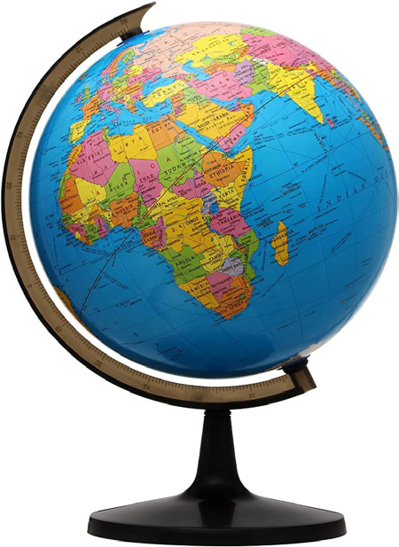
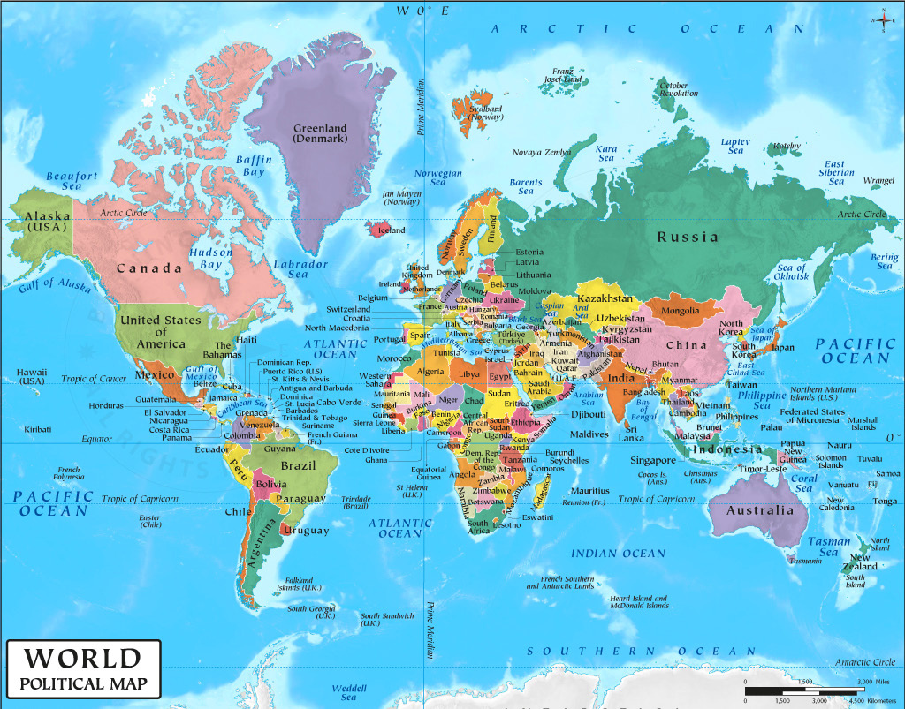
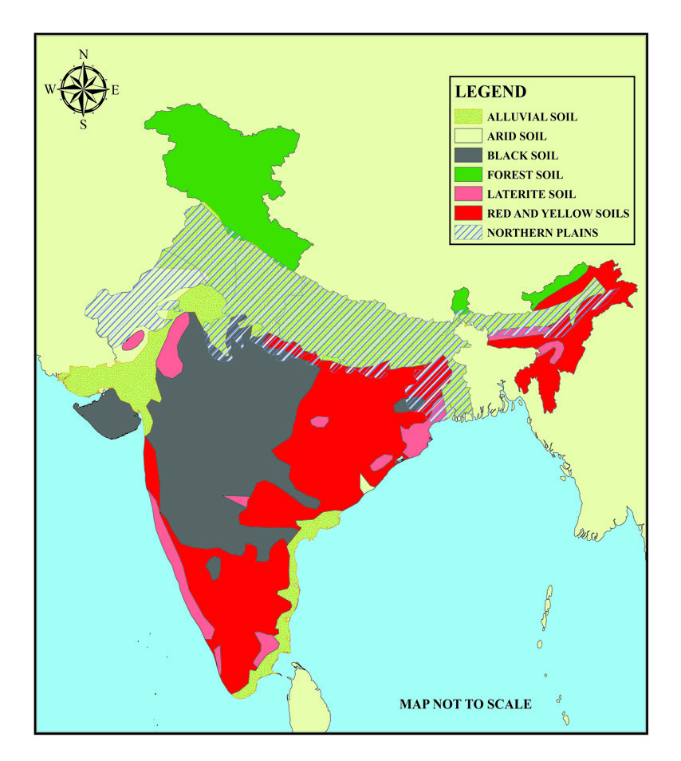
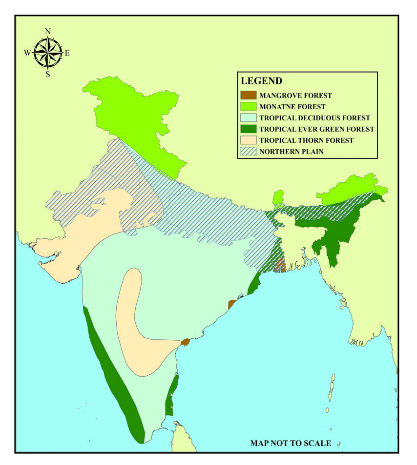
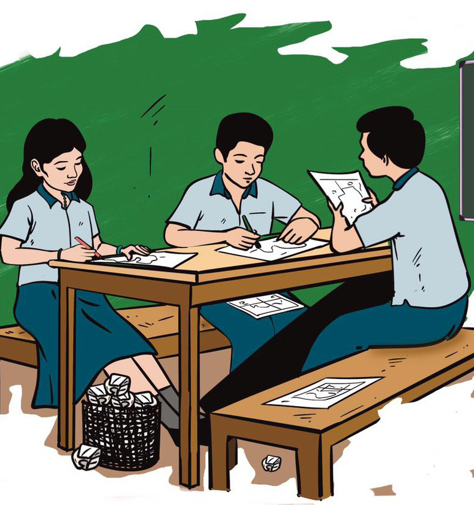
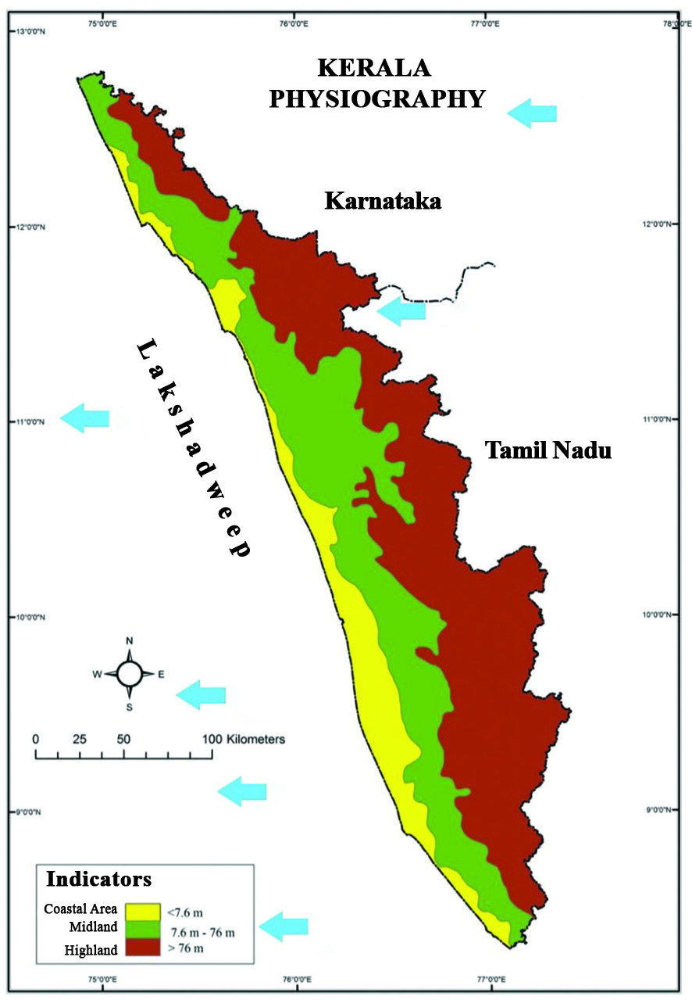
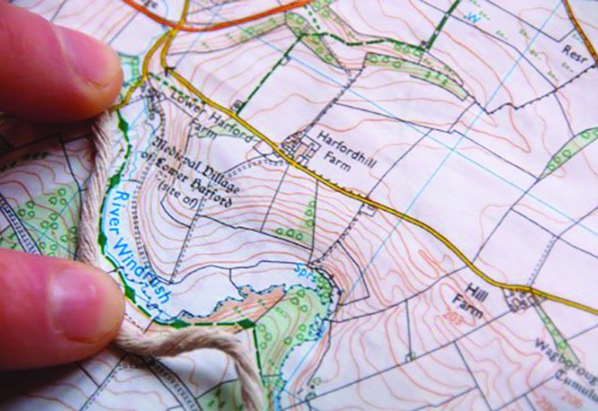
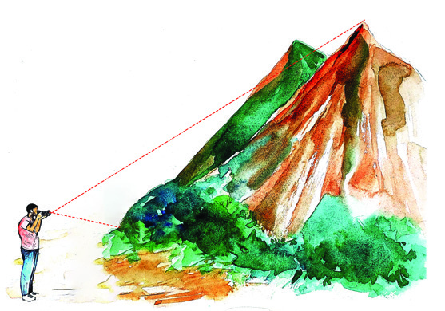
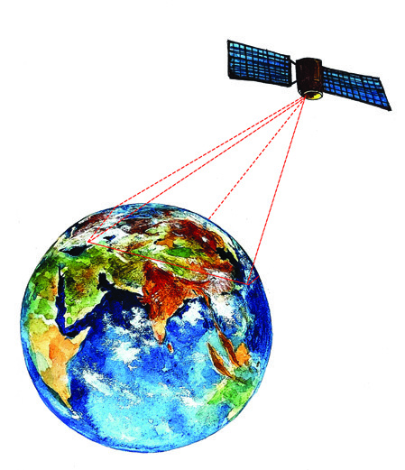
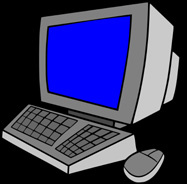

09
Dad, our trip to
Meeshappulimalai
yesterday was interesting,
wasn’t it?
What a fun it was to
discover new places and
gather information by
observing maps
and globes!
Yes, it was a very
good trip, indeed.
We could reach there
easily, as we were able to use
the digital map on our mobile
phone properly.
Yes, maps are a great
source of information.
In our day-to-day life, we use
different maps for
different purposes.
We use printed maps to
digital maps these days.
Now onwards, when we
plan our next trip, fixing the
places and route in advance
using a map, we can save
time, and the journey will
also be more enjoyable,
won’t it Dad?
Fig. 9.1
Maps and Technology to
Know the Earth
Page 20


Page 21




133
Maps and Technology to Know the Earth
Haven’t you read the conversation between a boy and his father about a trip they
made? Haven’t you seen how helpful the maps were in their trip? You might have
seen digital maps on vehicles and mobile phones. Haven’t you noticed the use of
such maps in travel? You are familiar with various types of maps displayed in the
Social Science lab of your school.
What are the situations in which maps are used? Just try writing them.
l to locate a place
l to find the route to a destination scientifically
l to understand the geographical features
l
The pictures of a globe and a map are given below. Observe them and
identify the differences between the two based on the given indicators.
You can also use the globe and map in the Social Science lab for the
purpose.
Fig. 9.2
Indicators:
l shape
l latitudes/longitudes
l use
Page 22

134
- Part 2
VII
Social Science
Some major characteristics of globes and maps are given below.
Classify and list them as ‘characteristics of globes’ and ‘characteristics
of maps.’
l a real model of the earth
l two-dimensional image of the earth
l spherical representation of the earth
l representation of the whole earth or a portion of it on a plain surface
l gives a comprehensive visual sense of the earth as it is illustrated completely
l latitudes and longitudes are illustrated as straight lines.
l longitudinal lines are illustrated as semicircles and latitudinal lines are
illustrated as concentric circles.
l very useful for collecting information of a specific place and for planning the
route for a trip
l
Now, say, what are maps? Maps are made by representing the whole earth or a
portion of it on a plain surface. Such plain surfaces on which the earth is partially
or completely depicted are called maps.
Different Purposes – Different Maps
Haven’t you found out the different purposes for which maps are used? Is it possible
for us to use the same map for all purposes? Our needs are different, and likewise,
the maps we use will also be different. Maps can be classified based on the two
factors given below.
l the function of the map
l the scale on which maps are made
Page 23


135
Maps and Technology to Know the Earth
The History of Maps
The history of mapmaking is as ancient as that of the human race.
The ancient maps were engraved on stones and wood; they have also
been made on clay, animal skin and textile. The earliest of all maps is believed
to have been made around 2500 BCE. It is a map that was drawn on a clay
plate in Mesopotamia. The Greek geographer Ptolemy who lived in the 2nd
century believed that the Earth was round. He tried to make a map according
to his concept. Until it was published in an atlas in the late 1400 CE, Ptolemy’s
maps were not known to the outer world. Thereafter, it became a source of
geographical information for
navigators
like
Columbus,
Cabbott, Magellan, Drake and
Vespucci. Even to this day,
the map made by Ptolemy
has
similarity
to
modern
maps.
It
was
Greek
and
Arab geographers who laid
the foundation for modern
mapmaking. It is believed that
attempts at mapmaking had been in India since the ancient period.
Fig. 9.3
Ptolemy’s World Map
Examine the titles of the maps in your Social Science lab and list
them.
l Political Map l Physiographic Map l Transportation Map
l Soil Map l
Haven’t you understood that each map has a different title? Each map is given a
title based on its function. Now, examine the Political Map of Kerala. Can’t we
find information on the different districts of Kerala? Likewise, list the information
Page 24


136
- Part 2
VII
Social Science
that you get after examining the political map of a continent, a country or a state.
Haven’t you understood the function of a political map? At the same time, a soil
map shows the different types of soil distribution in a region. The function of the
soil map is to provide information on different types of soil in a region.
Now, tell the function of a physiographical map.
Haven’t you understood that the function of a map is related to its content?
Maps can generally be classified into two based on their functions.
Let’s see what they are.
Physical
Maps
Maps that depict natural features of a region such as
topography, soil, rivers, climate and vegetation.
Cultural
Maps
Maps that depict man-made features or cultural features.
For e.g., political divisions such as countries, states
and districts, and roads, railways, ports, population
distribution, etc.
Classify and list the following maps as physical maps and cultural
maps.
physiographic map, soil map, climate map, vegetation map, river map,
political map, population map, economic map, transportation map.
Columns A and B give the various features on the surface of the earth
and the names of the maps on which they are depicted. Connect them
with lines.
A
B
l distribution of rain
l agricultural map
l forest area
l transportation map
l distribution of paddy fields
l climate map
l road network
l vegetation map
Page 25



137
Maps and Technology to Know the Earth
Haven’t you got familiarised with different types of maps? Each of them has
illustrated special geographical features. Do you know why we use different maps
for representing different geographical features? Observe the maps given below.
Fig. 9.4
The different types of soil distribution in India are illustrated on the first map
whereas the different types of natural vegetation are shown on the second. Imagine
that the information given on these two maps is depicted on the same map. If so,
what will happen? The information on both the maps, when brought together, will
create confusion, making data collection complex. That is why major geographical
features are depicted on different maps. The maps that thus focus on a particular
topic or specific theme are called Thematic Maps.
Examine an atlas and find out such types of maps and identify their
characteristics.
Let’s see how we can classify maps on the basis of the scale of the map. All maps are
constructed based on a fixed scale or a measurement. What is the scale for making
maps? Draw the sketch of your classroom in a notebook. Are the sketches drawn by
all of you similar? Haven’t you understood that it is not? Why did it happen so? It is
because you prepared the sketch not based on a fixed scale or measurement.
Is it possible to draw the sketch of your classroom with accurate measurements?
Certainly not because, to draw the accurate sketch of the area of our classroom,
we need to have a paper or notebook of the same size of the classroom.
Page 26


138
- Part 2
VII
Social Science
What if we consider a region? If we want to draw the map of a region with accurate
measurements, we need to have a paper or surface with the same measurements.
Is this possible? Then, how can we make a map or a sketch with accurate
measurements? It is here that we use a scale.
Let’s prepare the sketch of the classroom based on a scale.
Imagine that the breadth and length of your classroom is 5 m and 10 m,
respectively. Suppose we take 1 m of the class as 1 cm and draw it in our
notebook. If so, can’t we draw a rectangle that measures 5 cm of breadth and
10 cm of length? Similarly, measure the length and width of the benches and
tables and draw them in your notebook as 1 m of the classroom = 1 cm in
the sketch. The sketches of all of you will be alike if you find and mark the
north direction before drawing. Then, write below the sketch that 1 cm of
the sketch represents 1 m of the classroom (1 cm = 1 m). This is the scale of
the sketch. The ratio of the distance between the classroom and sketch is the
scale that we used to draw the sketch.
This is how maps are prepared using
scales. The ratio between the actual
distance on earth and the distance
marked on maps is the scale of a map.
For example, imagine that the scale
used in a map is 1 cm for 1 km. What
does this mean? 1 cm distance on the
map indicates 1 km distance on the
earth. If the length of the road is 10
cm on the map based on this scale,
the actual length of the road will be
10 km. Now, say, if the road distance
from point A to point B is 23 cm on the
map based on the scale given above,
what will be the actual distance?
Fig. 9.5
Page 27


139
Maps and Technology to Know the Earth
Observe the maps in your Social Science lab and find out and write
their scales.
Observe the flow chart given below.
Find out how maps are classified based on scale.
Classification of Maps Based on Scale
large-scale maps
small-scale maps
Scale e.g.,
1 cm = ½ km
1 cm = ¼ km
Scale e.g.,
1 cm = 25 km
1 cm = 10 km
for e.g., topographical map,
village map
for e.g., World Map, Map of India,
Map of Kerala
depicts more information
about a small area
depicts only less
information of an area
Maps
Analyse the features included in the chart and identify the differences
between large-scale and small-scale maps and prepare a note.
Page 28


140
- Part 2
VII
Social Science
Download the maps of panchayats or municipalities and topographical
maps with the help of information technology. Based on the scale
compare and classify the maps in your Social Science labs, the maps
in the atlas and the maps you have downloaded.
We have discussed different types of
maps and their classification. Now,
let’s see how we can collect data
from maps. Finding or collecting
information examining maps is called
map reading. Let’s examine the factors
that help us in map reading.
The factors that help in map reading
are given below.
1. Title
2. Scale
3. Direction
4. Latitude
5. Longitude
6. Conventional colours/symbols
7. Index
Observe the physiographic map of Kerala (Fig. 9.6) and identify each component.
Let’s examine how each component is helpful for collecting information from
maps.
Title
The title indicates the major geographical feature that is depicted on a map.
Observe the title of the given map. The title ‘Kerala – Physiography’ indicates that
the physiographical characteristics of Kerala are depicted on the map.
Fig. 9.6
1
6
5
4
3
2
7
Page 29



141
Maps and Technology to Know the Earth
Observe the maps in the Social Science lab and identify the relation
between the content and the title.
Scale
We know that maps are made based on the scale. Scale is the ratio between the
distance of two places on the ground and the corresponding distance of the same
places on the map. The length of a river, a road or a railway or the area of a region
or the extent of a geographical phenomenon is calculated accurately using this
scale.
Don’t you remember how we have calculated the actual length of the road using
the scale on the map? Similarly, find and write the distance between two regions,
and the actual length of the road, the river and the railway lines, based on the scale
on the maps in your Social Science lab. Use a twine as seen in the picture to find
the length of the road and the river.
Fig. 9.7
Finding the length of the river using a twine.
Find the length of a road or a river using a twine. Then measure it using a scale.
Find the actual length based on the scale on the map.
If 7 cm is obtained here, what is the actual length according to the scale of 1 cm on
the earth’s surface (1 cm = 1 km) on the map?
Generally, three methods are used to record the scale on a map.
Page 30


142
- Part 2
VII
Social Science
Statement of Scale
See how the scale is written as a statement. For e.g., 1 cm on the map indicates
1 km on the surface of the earth (1 cm = 1 km). Here, scale is indicated in a simple
way. Observe maps and find out the scales written as statements.
Representative Fraction or RF
Haven’t you noticed the marking of scales as RF = 1:100000? This method is
called representative fraction. This indicates that 1 unit in the map is equal to
100000 units on the surface of the earth. Thus, the unit that is given before ratio
(:) indicates the distance on the map and the unit that is given after ratio (:) is the
distance on the surface of the earth. Here, the distance on the ground and on the
map is indicated in the same unit. For example, think that centimeter is the unit
used to indicate distance here, then, the scale that is represented as Representative
Fraction indicates that one unit of distance or 1cm on the map is equal to 1 lakh
cm on the surface of the earth. 1 lakh cm is 1 km, isn’t it? If so, 1 cm on the map
indicates 1 lakh cm on the surface of the earth, that is, 1 km.
What is meant by the Representative Fraction, RF =1:200000.
Let’s try to write it.
Find out and write the Representative Fractions (RF)observing the
maps.
Linear Scale
500
1000
0
1
2
3
4
5
6
7
8
9
Metre
Kilometre
Linear scale is drawing and marking the scale as shown in the picture. Observe
maps and let’s get familiarised with linear scale method.
Page 31


143
Maps and Technology to Know the Earth
Directions
You have got an idea about directions
in the previous classes. Haven’t you
noticed the sign ‘N’ marked on top of
the maps? This indicates the northern
side of the region depicted on the
map. Imagine that we go on a trip with
the help of a map. If so, we find the
north with a compass and adjust the
north marked on the map according to
the compass, only then can we travel
without missing the direction. See
figure 9.8
Find out the direction of north using a compass. Then, arrange the
maps accordingly.
Observing and collecting details like direction and position of geographical
features, the direction of the course of rivers, etc. are also a part of map reading.
Examine the following sketch and complete the table.
Road
School Playground
N
Fig. 9.9
Fig. 9.8
Page 32

144
- Part 2
VII
Social Science
Geographical Information
Direction
In which direction of the playground is the school building
located?
In which direction of the school building is the water tank
located?
To which direction you should move from the school building to
reach the toilet?
In which part of the water tank is the well located?
Let’s play a game.
Find the Direction
Children may form different groups.
Prepare questions and answers as given in
the table above based on the sketch. Each
group should ask questions when they get
their turn. Give 1 score to the group which
gives the correct answer first. The game can be continued using maps instead
of sketch. For example, you may prepare and present questions and answers
like the location of geographical features based on directions, the distance
between cities, the direction of the course of the river, etc.
Fig. 9.10
Conventional Colours/Signs
We know that various man-made and natural phenomena on the surface of the
earth are illustrated in maps. Each geographical phenomenon is illustrated using
different colours and signs. Internationally accepted colours and signs are used for
this.
Do you know why geographical information is depicted on maps using
internationally accepted colours and signs? People from all countries can read
maps made in any country without confusion if we use internationally accepted
colours and signs. These colours and signs are used on maps where man-made and
natural phenomena are represented together.
Page 33

145
Maps and Technology to Know the Earth
Internationally accepted colours and signs are given in the table
below. Observe the table and find out the geographical information
that each colour represents.
Colours /Signs
Features
green
natural vegetation
yellow
agricultural land
red
habitats, roads
black
railway lines, latitudes
longitudes, telephone lines
blue
waterbodies
brown
rocky surfaces, sand dunes, mountains
tarred road
railway line
stream
river
church
temple
mosque
habitats
PO
post office
well
PS
police station
fort
bridge
pond
tubewell
cemetery
Page 34
146
- Part 2
VII
Social Science
Given
aside
is
a
sketch that depicts the
geographical information
using different colours and
signs. Examine the sketch,
identify the colours and
signs that represent each
geographical
area
and
mark them in the table
given below.
Colours and Signs
Features
railway line
bridge
fort
cemetery
pond
Index
Haven’t you understood how an index of the sketch given above was prepared?
An index is an essential factor in map reading. It helps us to understand what each
colour, sign or symbol on a map represents.
Latitudes and Longitudes
Latitudes and longitudes are essential to identify the location of each region and the
geographical feature on earth, and also to collect information about them. Don’t
you remember the discussion on latitudes and longitudes in the previous classes?
Fig. 9.11
Page 35

147
Maps and Technology to Know the Earth
Observe the map of India and find out between which lines of latitude
and longitude India is located.
Now you have an idea about how the details of a geographical region can be read
from maps. Nowadays, we have several new technological devices with which
we can collect, store, analyse and utilise this information. The advancement of
science and technology led to a drastic change in the data collection of geographical
features, analysis, illustration, presentation and making of maps. Let’s discuss what
are these innovative techniques?
Imagine you have got a magical mirror that you have heard about in stories. A
distant historical construction that you want to see appears in that magical mirror.
The mirror shows you the location of that historical construction, your location and
the route to reach there. Are you surprised? These things that were once considered
magical have now become simple with the help of technology. These are possible
today with the help of a smartphone.
Given below is an excerpt from a travelogue prepared by a child.
‘High mountain ranges that can be seen at a distance... cascades that gush out
like silver threads... shady woods that could be seen around the mountains...
precipices of rocks... beautiful sight that we can enjoy for hours together...’
Here, the travelogue has been prepared by taking pictures of the areas with a camera
and adding information after observing them.
This is a remote sensing method.
What is Remote Sensing?
Collecting information on an object, region or a phenomenon from a distance
without direct contact with the help of devices is called remote sensing.
Is collecting information by taking pictures with a camera the only method for
remote sensing?
Details of a geographical area can be collected by fixing cameras or scanners
(equipment used for collecting information) on balloons, aeroplanes and artificial
satellites.
The surfaces on which such sensors are fixed to collect data on a geographical area
are called platforms.
Page 36




148
- Part 2
VII
Social Science
Identify the Remote Sensing platforms that are available and list them.
l balloon
l
Based on the platforms that are used for collecting information on geographical
areas, remote sensing can be classified into three.
Observe the pictures and the table that are given below and prepare a
write-up on the three remote sensing methods and their features.
Terrestrial Remote Sensing
Aerial Remote Sensing
Satellite Remote Sensing
Terrestrial Remote
Sensing is the
method by which the
geographical features
are copied using
cameras from the
ground level.
Aerial Remote Sensing
is the method by which
the photographs of
geographical areas are
copied with the help of
a camera fixed on an
aeroplane.
Satellite Remote
Sensing is the
process by which
the information on
geographical areas
are collected using
platforms fixed on
artificial satellites.
Fig. 9.12
Fig. 9.13
Fig. 9.14
Page 37


149
Maps and Technology to Know the Earth
You have understood the various types of remote sensing. Let’s take a look at
their possibilities.
There are immense possibilities for remote sensing in the modern world. Some of
them are given below.
l for climate studies
l for studies in the agricultural sector
l to understand the availability of natural resources
l to collect information about areas affected by natural calamities like drought,
floods, etc.
l
Find other possibilities of remote sensing with the help of ICT and
write them.
Geographic Information System (GIS)
You have understood that information on geographical areas can be collected using
methods like map reading and remote sensing. We can come to conclusions after
analysing the information using the above methods and make products like maps,
graphs and tables. A software based computer technology is used to make such
products after analysing geographical information. This technology is known as
Geographic Information System.
The diagram given below explains the working of Geographic Information System
(GIS). Observe it.
Fig. 9.15
Collects data from
maps, satellite images,
aerial images, tables,
graphs, survey, etc.
Converts maps,
graphs, tables and
three dimensional
models as products
Analyses the
information using
a Geographical
Information System
software
User
Page 38
150
- Part 2
VII
Social Science
Benefits of Geographic Information System
Certain fields that benefit from the Geographic Information System are given in
the concept map below. Examine the concept map and identify them. Identify
other fields with the help of ICT and add to the concept map.
GIS
Technology
Benefits
resource management
industry
trade
education
communication
agriculture
planning
irrigation
transport
tourism
disaster management
Global Positioning System (GPS)
Think about a technology that identifies the location of an aeroplane, its altitude,
direction and the time taken to reach a destination accurately. This technology is
known as Global Positioning System.
This is the technology that helps
us to identify the latitudinal
and longitudinal location and
altitude of an object on the
surface of the earth. If it is a
moving object, its location,
direction of movement, its pace
and the time can be accurately
calculated using this technology.
The GPS is used in almost all
vehicles including aeroplanes
and ships. This system functions
with the help of a group of
artificial satellites.
Fig. 9.16
Page 39


151
Maps and Technology to Know the Earth
Check whether a GPS is fixed in your school bus.
With the help of ICT, identify the different purposes for which GPS is
used in day-to-day life.
Human life improves and becomes
more meaningful when the possibilities
of innovative technology like Remote
Sensing, GIS and GPS are used for
nation building and the progress of
the nation. Let’s utilise the scientific
advancements and scientific awareness
that we aspire for the welfare of our
nation.
Extended Activities
l Prepare a sketch of your school and illustrate the details of it using colours and
signs.
l Collect different types of physical and cultural maps with the help of ICT and
prepare a digital album.
l Collect information on the achievements of ISRO in various remote sensing
areas and prepare a wallpaper. Don’t forget to include it in your Social Science
Observation Book.
Bhuvan is a map making
system developed in India
by the ISRO. With the help
of ICT, find the features of
this system that uses the maximum
possibilities of GIS and remote
sensing.